使い方（画像つき）
講義ノートは、授業のメモに「印」を付けるだけで、試験の前に、まとめ・穴埋め・一問一答・用語テストのプリントを作れる、無料のノートです。ここでは、画面の写真を見ながら、使い方を説明します。
写真の中の 123 の番号は、すぐ下の説明の番号と同じです。写真をクリックすると、大きく開きます。
1. はじめて使う：印を付けて書き、試験対策プリントを作る
この流れは、AI を使いません。ノートを書いて印を付けるだけで、プリントができます。
手順 1開いて、サンプルで試す
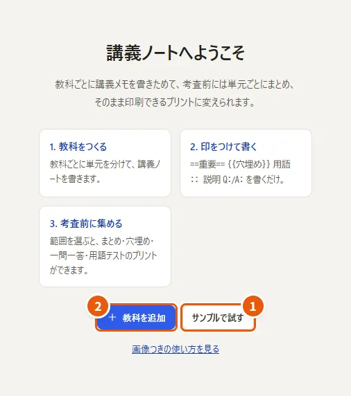
- 1サンプルで試す：教科・ノート・考査の見本が入ります。まずは、これで画面の動きを見るのがおすすめです。不要になったら、教科ごと削除できます。
- 2教科を追加：自分のノートを始めるときに押します。教科の名前と色を決めます。
手順 2画面の見かた
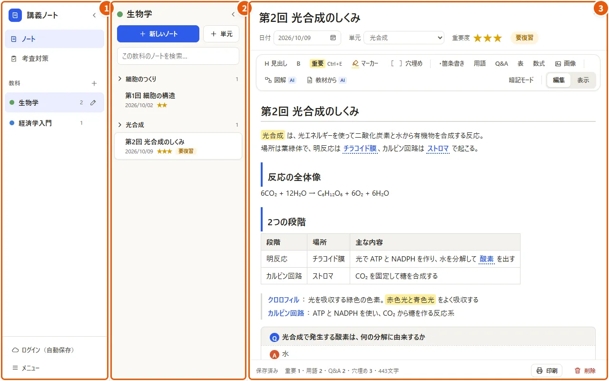
- 1左：「ノート」と「考査対策」の切り替え、教科の一覧。いちばん下に、「ログイン（自動保存）」と「メニュー」があります。
- 2真ん中：選んだ教科の、単元とノートの一覧。「新しいノート」「単元」のボタンと、検索の欄があります。
- 3右：ノートを書く場所。上に、タイトル・日付・単元・重要度（★）・「要復習」、その下に、書式のボタンが並びます。
手順 3印を付けて書く
ふつうの文章に、次の「印」を付けるだけです。この印を、アプリが集めて、プリントにします。
| 書き方 | できあがり | プリントでの使われ方 |
|---|---|---|
==重要な語== | 黄色のマーカー | 「重要ポイント」に自動で集まる |
{{答え}} | 点線の下線がついた答え | 穴埋めプリントの空欄 (1)(2)… になる |
用語 :: 説明 | 用語（青）と説明 | 用語集・用語テストになる |
Q: 問いA: 答え | Q と A のカード | 一問一答プリントになる |
## 見出し - 箇条書き **太字** | ふつうの書式 | ノート全体・まとめに使われる |
左の文字が書いたもの、右が出来上がりです。（これは、設定で「従来の分割表示」にしたときの画面です。ふだんは、次の写真のように、書いたその場で変わります。）
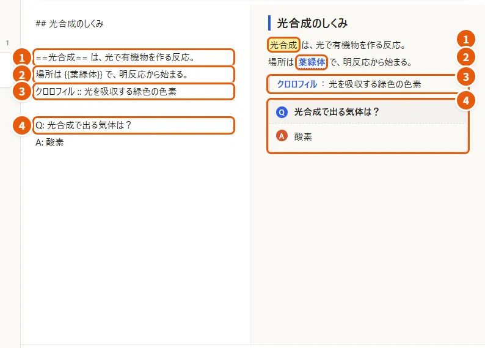
- 1
==光合成==→ 重要マーカー - 2
{{葉緑体}}→ 穴埋めの答え - 3
クロロフィル :: 光を吸収する緑色の色素→ 用語 - 4
Q:とA:→ 一問一答
書いたその場で、見た目が変わります。「==」や「{{」などの記号は、書き終えた瞬間に、完成した見た目になります。カーソルがある行だけ、記号が見えます（書き直せるように）。
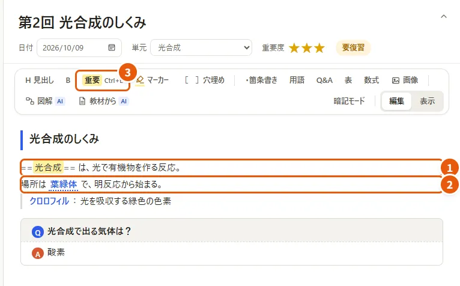
- 1カーソルのある行：記号が見えて、書き直せます。
- 2ほかの行：完成した見た目になります。
- 3ボタンでも付けられます：「重要」「穴埋め」「用語」「Q&A」「表」「数式」「画像」など。「マーカー」ボタンでは、色も選べます。
Q:の行で Enter を押すと、次の行にA:が自動で入ります。- Ctrl+B で太字、Ctrl+E で重要マークになります。
- 画像は、Ctrl+V で貼り付けられます（スクリーンショットも使えます）。
- 「暗記モード」のボタンを押すと、穴埋めの答えが隠れます。クリックすると、1つずつ見られます。
手順 4考査を作る
「考査」は、このアプリでは、試験の対策のまとまりです。試験ごとに、範囲（単元）を選んで、プリントを作ります。
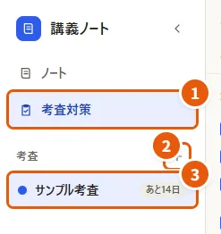
- 1左の「考査対策」を押します。
- 2「考査」の横の ＋ を押します。
- 3作った考査が並びます。試験の日を入れると、「あと14日」のように、残りの日数が出ます。
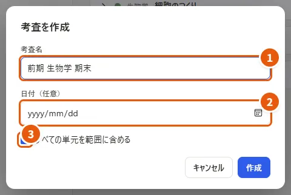
- 1考査名（例：前期 生物学 期末）
- 2日付（入れなくても作れます）
- 3「すべての単元を範囲に含める」：チェックを入れると、全部の単元が、最初から範囲に入ります。あとで変えられます。
手順 5範囲を選ぶ
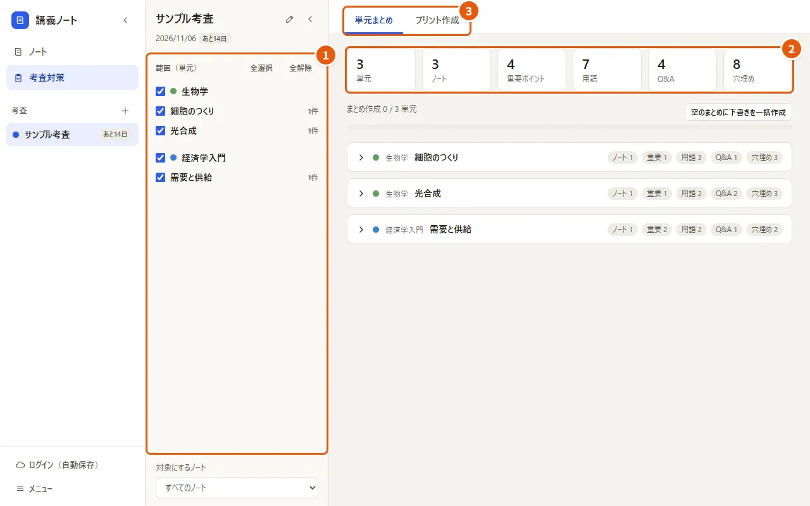
- 1範囲（単元）：試験に出る単元に、チェックを入れます。「全選択」「全解除」もあります。いちばん下の「対象にするノート」で、「すべてのノート」「重要度 ★★ 以上」「★★★ のみ」「要復習のみ」に絞れます。
- 2選んだ範囲に、重要ポイント・用語・Q&A・穴埋めが、いくつあるかが出ます。
- 32つのタブ：「単元まとめ」と「プリント作成」を切り替えます。
手順 6単元まとめ（自分の言葉で整える）
単元のところを開くと、その単元の「まとめ」を書けます。
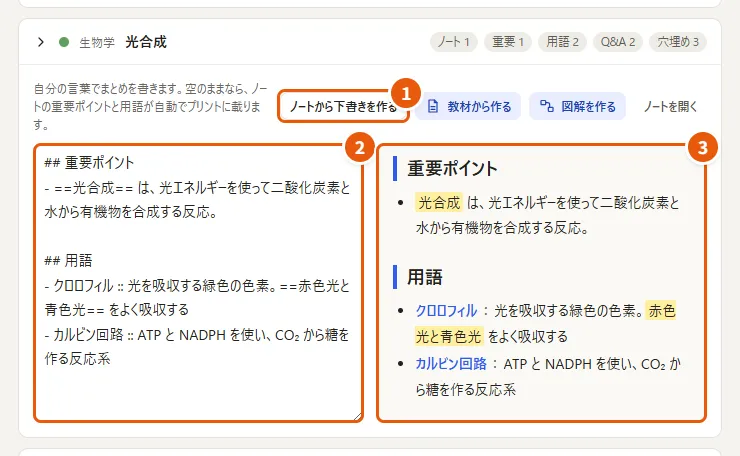
- 1ノートから下書きを作る：ノートの、重要ポイントと用語が、下書きとして入ります。
- 2自分の言葉に直します。
- 3右が、プリントに載る見た目（プレビュー）です。
手順 7プリントを作る
「プリント作成」のタブを開きます。
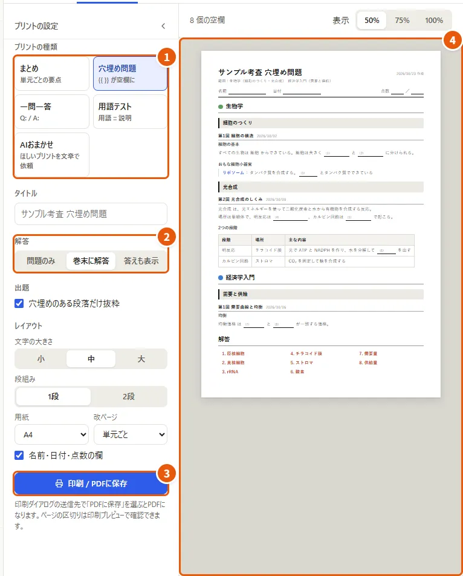
- 1プリントの種類
- まとめ：単元ごとの要点
- 穴埋め問題：
{{ }}が空欄になる - 一問一答：
Q:とA: - 用語テスト：
用語 :: 説明 - AIおまかせ：AI を使います（→ 3. AI を使えるようにする）
- 2解答の出し方：「問題のみ」「巻末に解答」「答えも表示」から選びます。
- 3印刷 / PDFに保存：印刷の画面で、送信先を「PDFに保存」にすると、PDF になります。ほかに、文字の大きさ、段組み、用紙（A4・B5・A5）、改ページも選べます。
- 4右が、プリントのプレビューです。表示の大きさ（50%・75%・100%）を選べます。
{{ }} で、答えを囲んでいるか、確かめてください。「穴埋めのある段落だけ抜粋」にチェックが入っていると、{{ }} のない段落は、プリントに出ません。2. 棚で、友達とノートを共有する
「棚」は、友達どうしで、ノートや資料を、フォルダごとに整理して見せ合う場所です。グループの会話は LINE などで行い、棚は、整理して保管するために使います。
- 棚は、LINE の中のブラウザで開くことを想定して作ってあります（「見る・いいね」は、そこでできる設計です）。ただし、LINE の中での表示は、まだ十分に確かめられていません。うまく表示されないときは、Safari または Chrome で開いてください。
- 「投稿」には Google のログインが要ります。LINE の中のブラウザでは、Google にログインできないので、Safari または Chrome で開いてください。
- 棚のアカウント（ログインIDとパスワード）は、アプリ本体の Google ログインとは別です。
- パスワードを忘れると、復旧できません。メモなどに残しておいてください。
手順 1アカウントを作る
棚を開く（メニューの「棚を開く」、または、友達から届いたリンク）と、まず、ログインの画面が出ます。はじめてのときは、「アカウントを作る」を押します。
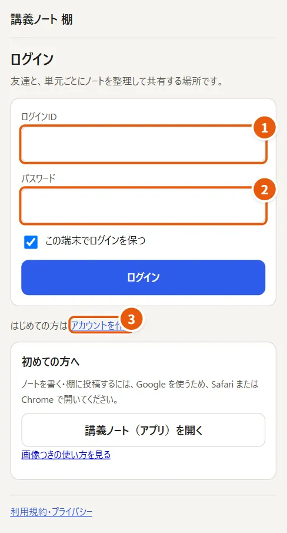
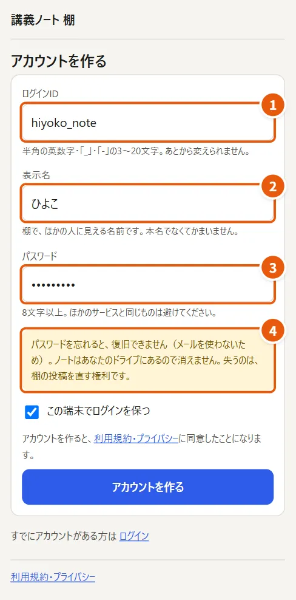
ログインの画面
- 1ログインID
- 2パスワード
- 3はじめての方は、「アカウントを作る」
アカウントを作る画面
- 1ログインID：半角の英数字と「_」「-」で、3〜20文字。あとから変えられません。
- 2表示名：棚の中で、ほかの人に見える名前です。「運営」を含む名前は使えません。
- 3パスワード：8文字以上。
- 4注意：パスワードを忘れると、復旧できません。
「この端末でログインを保つ」には、初めからチェックが入っています。次から、ログインが省けます。ほかの人も使う端末では、チェックを外してください。
手順 2棚を作る（管理者になる）
棚を作った人が、その棚の「管理者」になります。1人が作れる棚は、5つまでです。
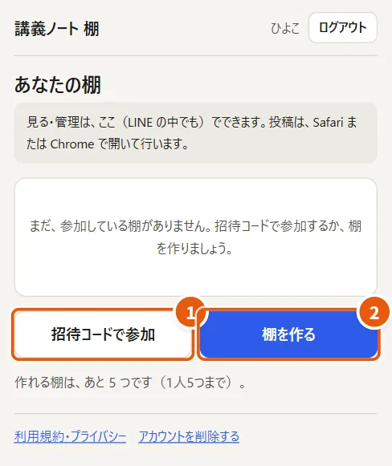
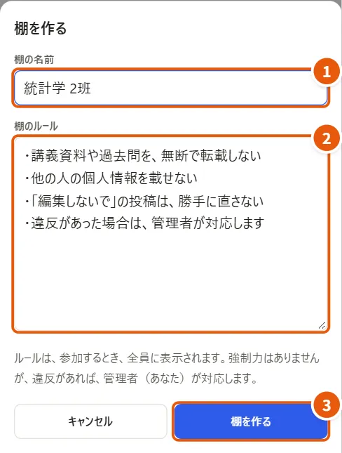
- 1棚の一覧で、「棚を作る」を押します。（「招待コードで参加」は、友達の棚に入るときです。）
- 2棚の名前（例：統計学 2班）と、棚のルールを入れます。ルールは、参加するとき、全員に表示されます。強制力はありませんが、違反があった場合は、管理者が対応します。
- 3「作る」を押します。
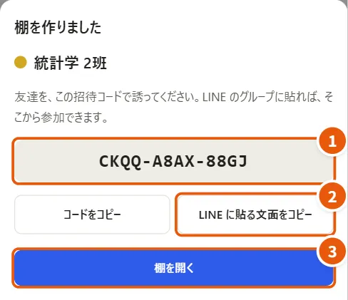
- 1招待コード（12文字。4文字ずつ区切られています）。友達に伝えると、参加できます。
- 2「LINE に貼る文面をコピー」：LINE のグループに貼れば、そこから参加できます。
- 3「棚を開く」で、棚の中に入ります。
手順 3棚に参加する
友達から、招待コード（またはリンク）をもらったら、棚の一覧の「招待コードで参加」を押します。先に、手順 1 のアカウントが必要です。
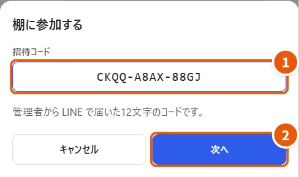
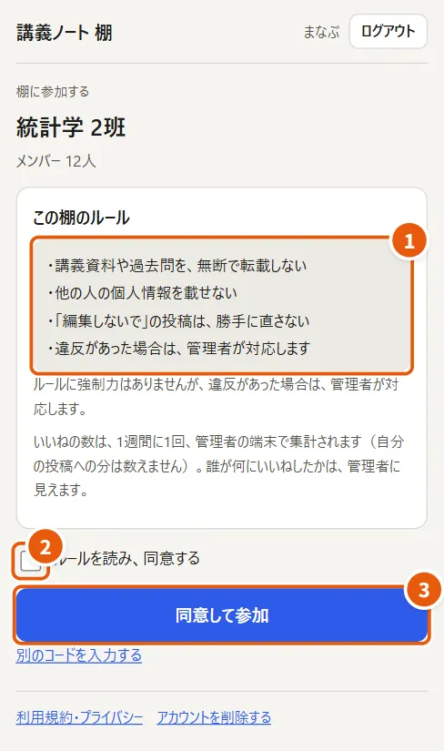
- 1招待コードを入れて、「次へ」を押します。
- 2棚のルールを読みます。
- 3「ルールを読み、同意する」にチェックを入れて、「同意して参加」を押します。
手順 4棚の中を見る・投稿を開く
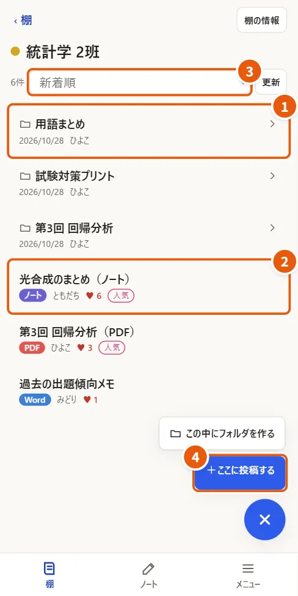
- 1フォルダ：「開く」で、中のフォルダや投稿が見られます。授業や単元ごとに、整理します。
- 2投稿：種類（ノート・PDF・Word など）、大きさ、日付、投稿者が出ます。「編集OK」「編集しないで」の札は、投稿した人の希望です。♥ は、いいねの数。いいねが多い投稿には、「人気」の印が付きます。
- 3並べ替え：新着順・名前順・いいね順。
- 4「ここに投稿する」：このフォルダに投稿するときに押します（Safari または Chrome で開きます）。
投稿の名前を押すと、中身が開きます。
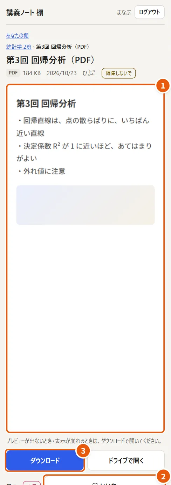
- 1プレビュー：その場で、中身を見られます。
- 2♡ いいね
- 3ダウンロード／「ドライブで開く」：プレビューが出ないとき、表示が崩れるときに使います。
- 「編集しないでほしい」の投稿は、個人で使うだけにしてください。（技術では止められないので、お願いです。）
- 問題のある投稿は、投稿のページの「この投稿を通報する」で、管理者に知らせられます。
- 「このアプリのノート」の形式で投稿されたものは、「自分のノートに取り込む」で、自分のアプリに取り込めます。「編集OK」のノートなら、直して、自分の版（派生版）として、同じフォルダに出せます。
手順 5棚に投稿する
投稿は、アプリのメニューの「棚に投稿」から行います（または、棚のフォルダの「ここに投稿する」）。Safari または Chrome で開いてください。
- Google にログインします（自分のドライブにファイルを置くため）。
- 棚のログインID・パスワードを入れます。
- 投稿する棚と、フォルダを選びます。
- ファイル（または、このアプリのノート）と、タイトルを選びます。
- 「編集の扱い」を選び、棚のルールに同意して、「投稿する」を押します。
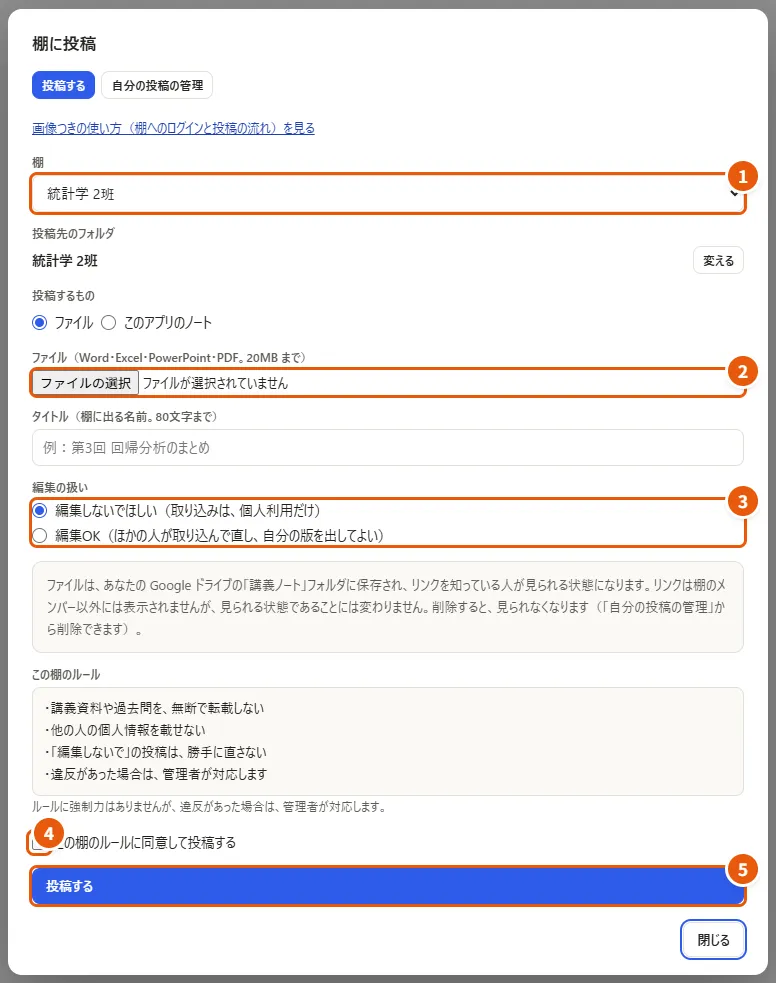
- 1棚：投稿する棚を選びます。
- 2ファイル：Word・Excel・PowerPoint・PDF（20MB まで）。画像・動画・実行ファイル・マクロ付きのファイルは、投稿できません。
- 3編集の扱い：「編集しないでほしい（取り込みは、個人利用だけ）」か、「編集OK（ほかの人が取り込んで直し、自分の版を出してよい）」。
- 4棚のルールに同意します。
- 5投稿する
- ファイルは、あなたの Google ドライブの「講義ノート」フォルダに保存され、リンクを知っている人が見られる状態になります。消すときは、「棚に投稿」の「自分の投稿の管理」から。ドライブからも消えて、見られなくなります。
- 他の人が作った資料の、無断の転載はできません（講義の配布資料・過去問・教科書・有料の教材など）。投稿できるのは、自分が作ったもの、または、転載してよいと確認できたものだけです。
手順 6管理者の画面
管理者は、棚の画面の「管理者の画面」から、棚の世話ができます。
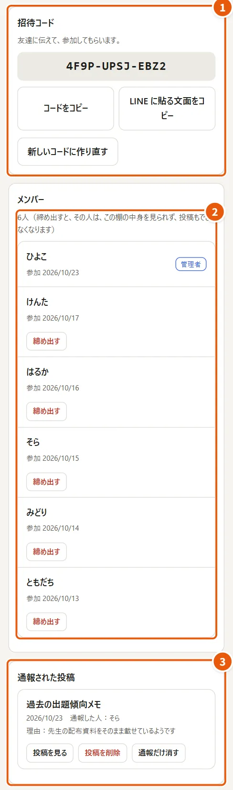
- 1招待コード：コピーしたり、「新しいコードに作り直す」ができます。
- 2メンバー：問題のある人は、「締め出す」。締め出された人は、棚の中身を見られず、投稿もできなくなります。解除もできます。
- 3通報された投稿：「投稿を見る」「投稿を削除」「通報だけ消す」から選びます。
このほかに、棚の名前とルールの変更、棚の削除ができます。
利用の決まりや、運営が見られる情報は、棚の利用規約・プライバシーに書いてあります。
3. AI を使えるようにする
プリント（まとめ・穴埋め・一問一答・用語テスト）は、AI を使わなくても作れます。AI は、「教材からノートを作る」「図解を作る」「AIおまかせでプリントを作る」ときに使います。
手順 23つの中から選ぶ
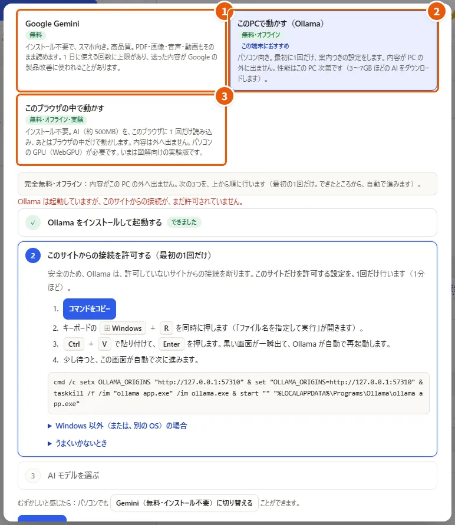
- 1Google Gemini
- 2このPCで動かす（Ollama）
- 3このブラウザの中で動かす
| 1. Gemini | 2. Ollama | 3. ブラウザの中 | |
|---|---|---|---|
| 料金 | 無料（1日に使える回数に上限） | 無料 | 無料 |
| 準備 | インストール不要。Google で API キーを作って、貼り付ける | Ollama を入れる。最初に1回、案内つきの設定（3〜7GB ほどの AI をダウンロード） | インストール不要。AI（約 500MB）を、最初に1回だけ読み込む（いまは準備中） |
| 向く端末 | スマホ・パソコン | パソコン | パソコン（GPU の WebGPU が必要） |
| 内容の行き先 | Google に送られる。無料枠では、Google の製品改善に使われることがある | PC の外に出ない | ブラウザの中だけ |
| できること | 教材からノート（PDF・画像・音声・動画も読める）・図解・AIおまかせ | 教材からノート・図解・AIおまかせ（速さは PC しだい） | 使えるようになったときは、図解のみ（実験） |
手順 3AGemini を使う場合：キーを貼り付ける
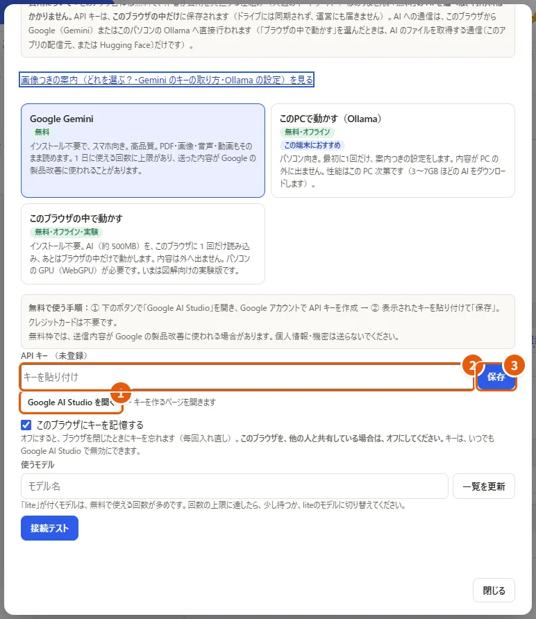
- 1「Google AI Studio を開く」を押し、Google アカウントで、API キーを作ります（クレジットカードは要りません）。Google の画面の案内に従ってください。
- 2できたキーを、この欄に貼り付けます。
- 3「保存」を押します。そのあと「接続テスト」で、つながるか確かめられます。
- キーは、このブラウザの中だけに保存されます（ドライブには同期されず、運営にも届きません）。他の人が使うパソコンでは、「このブラウザにキーを記憶する」をオフにしてください。
- 無料枠には、使える回数の上限があります。上限に達したら、少し待つか、名前に「lite」の付いたモデルに切り替えてください。
- 無料枠では、送った内容が、Google の製品改善に使われることがあります。個人情報や機密は送らないでください。
手順 3BOllama を使う場合：3つの手順（パソコン）
最初に1回だけ、設定が要ります。画面の案内に沿って、上から順に進めます。できたところから、画面が自動で進みます。
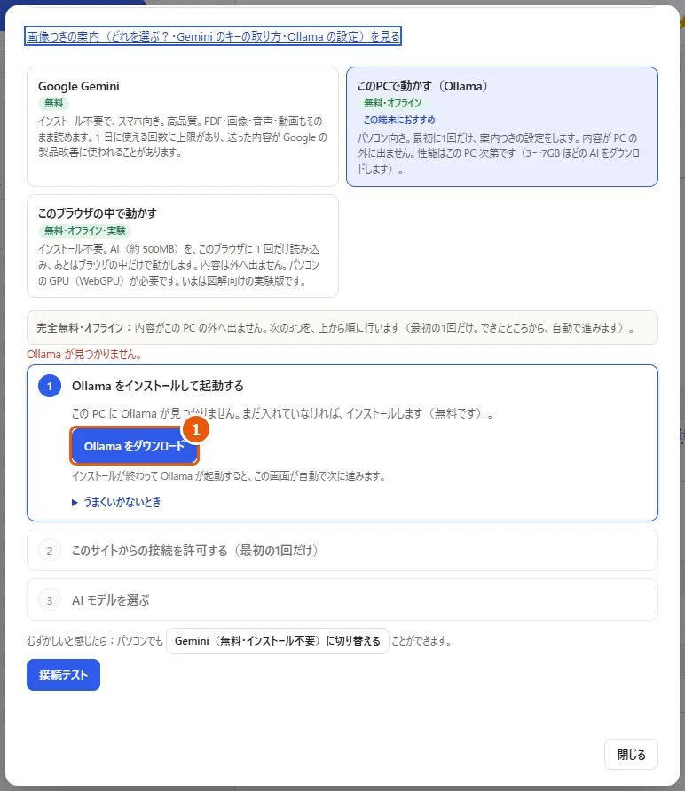
- 1「Ollama をダウンロード」から、Ollama を入れて、起動します。
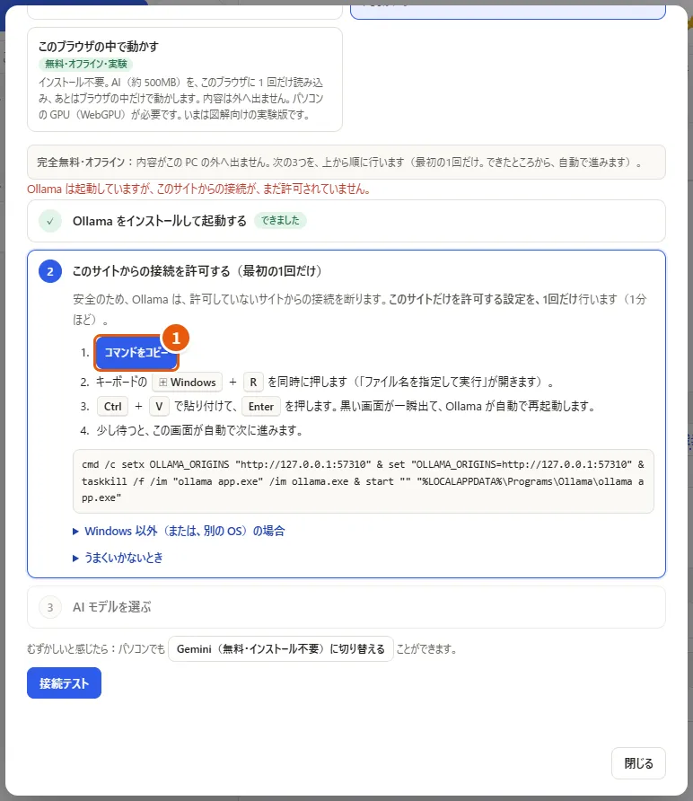
- 1「コマンドをコピー」を押します。次に、キーボードの Windows ＋ R を同時に押し、Ctrl ＋ V で貼り付けて、Enter を押します。黒い画面が一瞬出て、Ollama が自動で再起動します。少し待つと、画面が次に進みます。
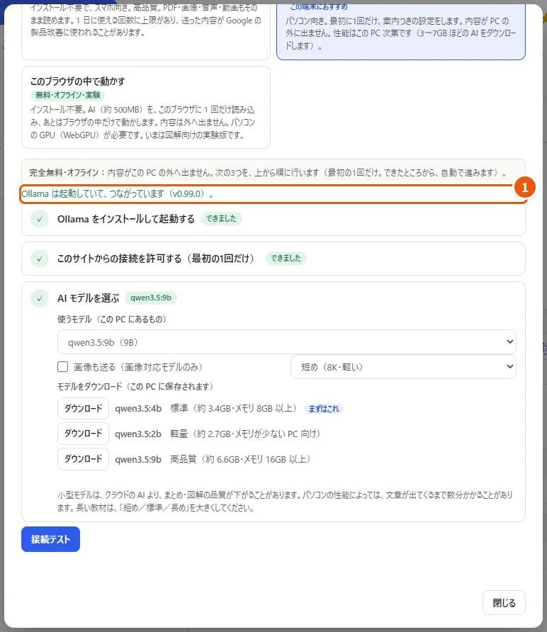
- 1「つながっています」と出たら、成功です。次に、使う AI（モデル）を選んで、ダウンロードします（数 GB あるので、時間がかかります）。
- Windows 以外（Mac など）は、画面の「Windows 以外（または、別の OS）の場合」を開いてください。
- うまくいかないときは、画面の「うまくいかないとき」を開いてください。
- むずかしいと感じたら、画面の下のボタンで、Gemini に切り替えられます。
手順 3Cブラウザの中で動かす場合（いまは準備中）
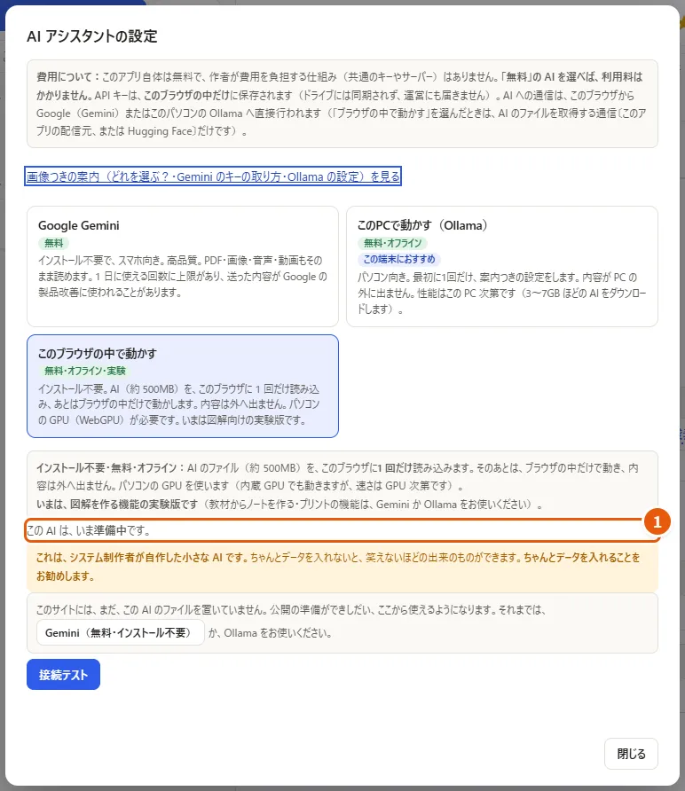
- 1「この AI は、いま準備中です」と出ます。このサイトには、まだ、この AI のファイルを置いていないためです。準備ができしだい、使えるようになります。それまでは、Gemini か Ollama をお使いください。
- 使えるようになったときは、AI のファイル（約 510MB）を、最初の1回だけ、ブラウザに読み込みます。そのあとは、ブラウザの中だけで動きます。
- いまのところ、図解を作る機能の実験版になる予定です。教材からノートを作る機能と、プリントの機能は、Gemini か Ollama を使ってください。
手順 4AI でできること
(1) 教材から、ノートを作る
授業のスライドなどを渡すと、ノートの下書きを作ります。ノートの画面の「教材から AI」ボタン、または、単元まとめの「教材から作る」から開きます。
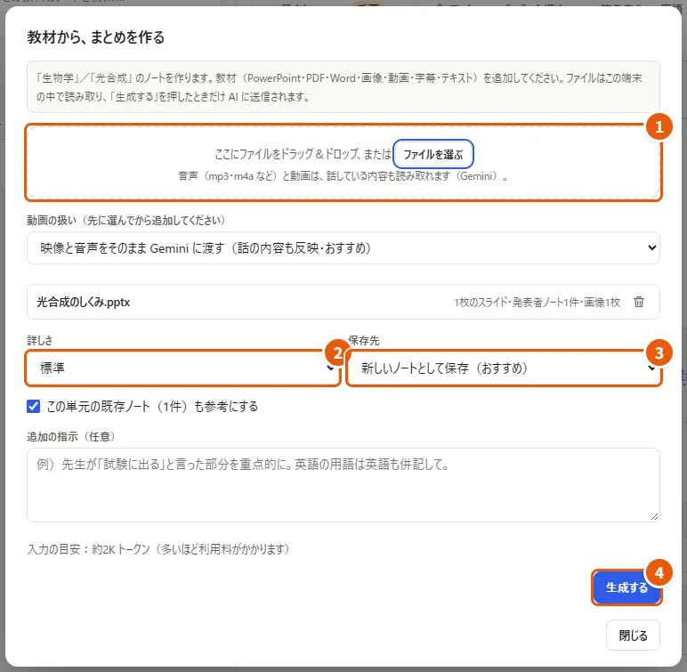
- 1ファイルを追加：PowerPoint・PDF・Word・画像・動画・字幕・テキスト。音声（mp3 など）は、Gemini のときだけ読めます。ファイルは、この端末の中で読み取り、「生成する」を押したときだけ、AI に送られます。
- 2詳しさ：簡潔・標準・詳しい。
- 3保存先：新しいノートとして保存（おすすめ）／単元まとめの末尾に追加／単元まとめを置き換える。
- 4「生成する」を押します。
(2) 図解を作る
AI が作るのは、図の「設計図」（どの項目を、どうつなぐか）だけです。図そのものは、アプリが自動で描きます。描き方（色・形）は、できたあとで、選び直せます。ノートの画面の「図解 AI」ボタンから開きます。
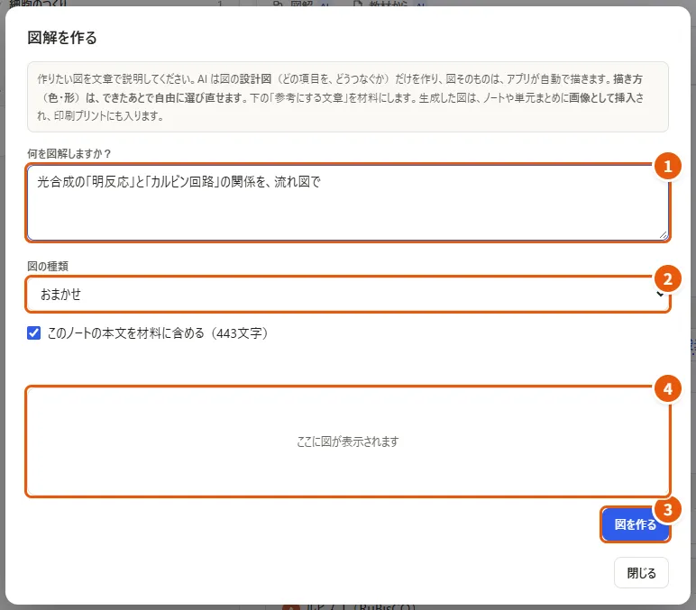
- 1何を図解しますか？：文章で書きます。
- 2図の種類：「おまかせ」のほか、下の7種類から選べます。
- 3「図を作る」を押します。
- 4できた図が、ここに出ます。気に入ったら、「ノートに挿入」で、ノートに入れます。
図の種類の見本です（これは、AI を使わず、設計図から、アプリが描いたものです）。
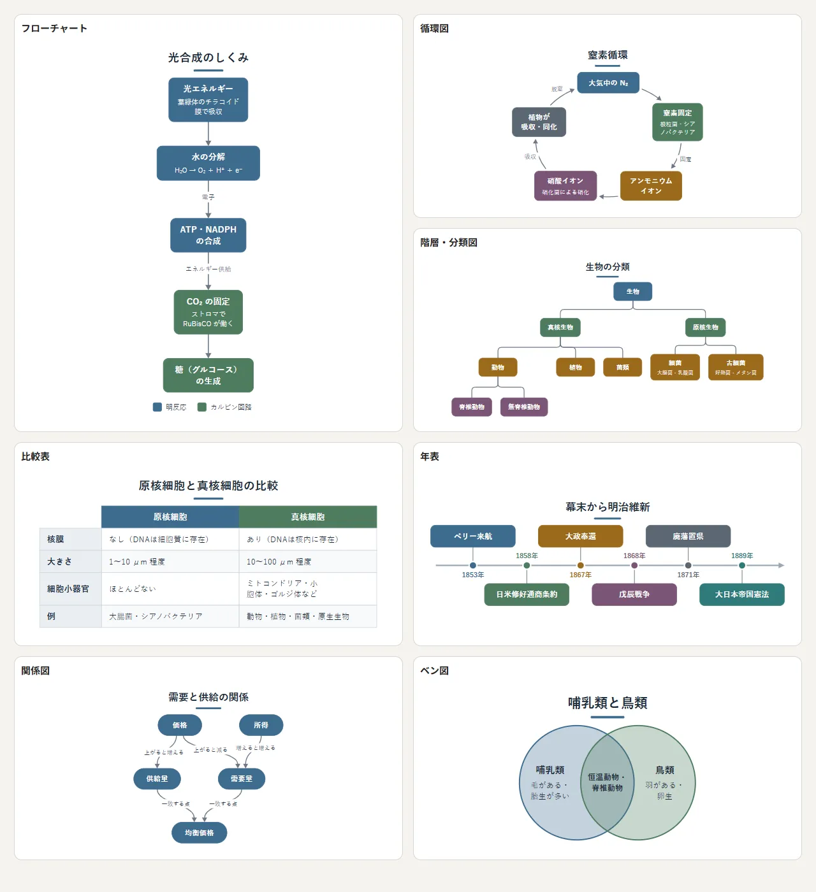
(3) プリントの「AIおまかせ」
「プリント作成」のタブで、種類に「AIおまかせ」を選ぶと、ほしいプリントを文章で頼めます。
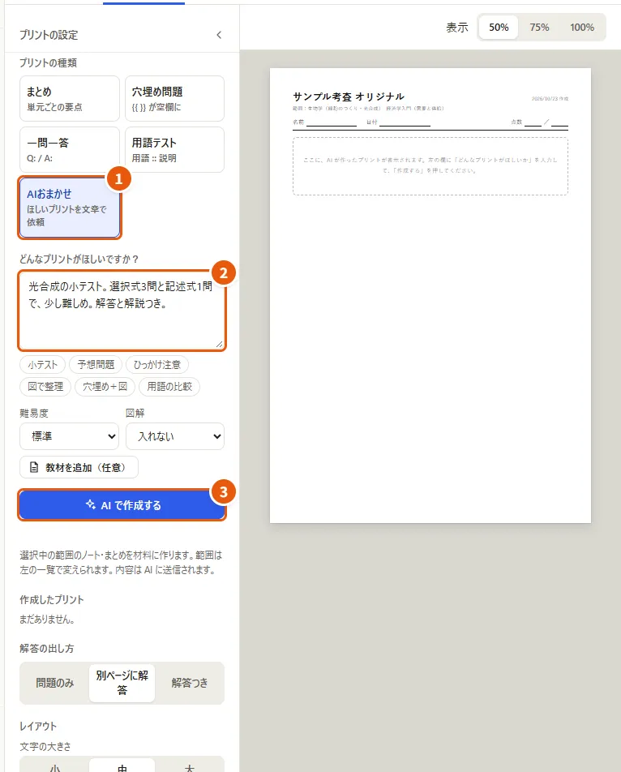
- 1種類で「AIおまかせ」を選びます。
- 2どんなプリントがほしいかを、文章で書きます（例：光合成の小テスト。選択式3問と記述式1問で、少し難しめ。解答と解説つき）。難易度や、図解を入れるかも選べます。
- 3「AI で作成する」を押します。選んだ範囲のノートとまとめが、材料になります。
4. 困ったとき
- ノートが消えた／別の端末でも見たい
- ノートは、まず、そのブラウザの中に保存されます。ブラウザの閲覧データを消すと、消えます。左下の「ログイン（自動保存）」で Google にログインしておくと、自分のドライブにも保存され、ほかの端末でも、同じアカウントでログインすれば、見られます。メニューの「バックアップ」で、ファイルに書き出すこともできます。
- 棚のパスワードを忘れた
- 復旧できません。別のログインIDで、アカウントを作り直してください。
- LINE の中で、投稿できない
- 投稿には Google のログインが要りますが、LINE の中のブラウザでは、Google にログインできません。Safari または Chrome で開いてください。
- 穴埋めが、プリントに出ない
- 答えを
{{ }}で囲んでいるか、確かめてください。プリント作成の「穴埋めのある段落だけ抜粋」も、確かめてください。 - AI が「つながらない」と言う
- Gemini：キーが正しいか、「接続テスト」で確かめてください。使える回数の上限に達しているときは、少し待つか、名前に「lite」の付いたモデルに切り替えてください。Ollama：Ollama が起動しているか、手順②の許可が済んでいるかを、設定画面の表示で確かめてください。
それでも解決しないときは、メニューの「フィードバック」から、教えてください。